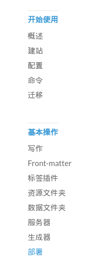

背景
搭建环境:Linux,nodejs,npm,git
现在网上已经有很多关于搭建hexo github博客的文章,我自己也是参考别人的文章过来的,但是现在hexo已经到了3.0版本,很多教程都过时了,而且感觉他们教程的思路着重于怎么做,并没有说明背后的原因,所以我希望写一篇着重于为什么,而不是怎么做的文章.我相信只有理解背后的原理才能更好更快的上手.
其次,最好的教程就是官方文档,所以在这篇文章我引用的都是官方文档的内容,而且只是提供思路,不提供详细步骤.因为版本更新之后,操作是不一样的,官方文档会随时更新,但是这篇文章不一定会随时更新,然而思路是不变的,所以我极力推荐大家首先阅读官方文档.
什么是Github Page
首先,所谓的github博客是通过github page来实现的.
简单的说，Github是一个具有版本管理功能的代码仓库，每个项目都有一个主页，列出项目的源文件。
但是对于一个新手来说，看到一大堆源码，只会让人头晕脑涨，不知何处入手。
他希望看到的是，一个简明易懂的网页，说明每一步应该怎么做。
因此，github就设计了Pages功能，允许用户自定义项目首页，用来替代默认的源码列表。
所以，github Pages可以被认为是用户编写的、托管在github上的静态网页。
什么是Hexo
Hexo 是一个快速、简洁且高效的博客框架。Hexo 使用 Markdown（或其他渲染引擎）解析文章，在几秒内，即可利用靓丽的主题生成静态网页。
我们主要是用hexo在本地写博客,然后上传到github page,就像你commit项目代码到github一样.
操作
建立一个Github page
首先注册个github账户,然后在本地配置ssh到github,这一步自行google.
Create a repository
Head over to GitHub and create a new repository named username.github.io, where username is your username (or organization name) on GitHub.
If the first part of the repository doesn’t exactly match your username, it won’t work, so make sure to get it right.
官方教程主要强调命名项目的格式,即一定要命名为 username.github.io
同时,建完项目之后不要进行任何操作.我们可以直接用hexo初始化项目.
安装配置hexo
这一步强烈推荐看Hexo 官方文档,现在很多网上的安装过程是过时的,现在hexo是3.0了.
请耐心的看完官方文档以下内容

由于hexo3.0很多功能都插件化了,包括git上传,server功能.
所以我们要把博客上传到github就需要先装git插件,详细见部署(切记要根据文档配置config.yml)
以下是常用插件
npm install hexo-generator-index --save
npm install hexo-generator-archive --save
npm install hexo-generator-category --save
npm install hexo-generator-tag --save
npm install hexo-server --save
npm install hexo-deployer-git --save
npm install hexo-renderer-marked@0.2 --save
npm install hexo-renderer-stylus@0.2 --save
npm install hexo-generator-feed@1 --save
npm install hexo-generator-sitemap@1 --save
在命令行执行即可
用hexo写作github博客的流程
注意:hexo是用markdown来写作的,以下命令都是博客所在目录执行
- hexo new "title"
新建一篇文章,然后编辑相应的md文件
具体使用查看写作 - hexo clean
清除缓存 - hexo generate
根据写作的内容和配置生成网页
生成文章在public文件夹中,上传到github的就是里面的内容
具体使用查看生成器 - hexo deploy
上传到github
具体使用查看部署 - 访问username.github.io查看内容
hexo与github的关系
hexo是一个博客框架,给我们提供了基于markdown的语法,帮助我们自动生成博客.
由于github提供了github page的功能,那么我们可以把生成的博客网页放在github上,供大家访问.
也就是说github就像是一个网站空间,由于hexo自带对github的支持,可以直接commit内容到github上,也就是说我们可以把hexo当做集成了写作和ftp发布功能的软件.
hexo的主题
hexo有丰富的主题支持,本博客用的就是jacman
更多主题查看主题
总结
整个部署流程如下
- 注册github
- 创建 username.github.io
- 安装配置hexo
- 开始写作
- 额外配置主题
总的来说,刚开始配置就是一直在折腾,需要有足够的耐心,可能大家都喜欢看别人一步步的详细的步骤,自己只要复制粘贴就行了.但是有时候即使你完全照着做也会出问题的,因为版本和环境不一样.
一开始我也是这样,后来才发现,最好的方法是查看别人做的思路,然后去找官方的文档.这样遇到的问题会大大减少,有时候你纠结半天的问题可能只是版本不一样.就像前面deploy部署,所有文章都是没有提到要先装
npm install hexo-deployer-git --save
因为hexo3.0把它插件化了,然后我在官方文档找到了答案.
最后提示一下：如果运行命令出现什么问题，加上sudo试试看看，里面有些需要root权限(例如说sudo hexo server)
仅以此文记录折腾hexo的过程,并且希望给后来者有参考价值.
最后推荐一篇极其详细的使用hexo的文章hexo你的博客
里面的搭建流程是hexo2.0的,最好参考官方文档3.0的方法
补充
关于草稿的使用方法
官方文档关于草稿的使用没有说的很清楚,我根据自己的使用情况作一些介绍.
- 创建草稿
hexo new draft "title"在source/_drafts中会创建一份md文件.作为草稿. - 预览草稿
这一步文档中只是要加--draft,没有详细说在哪里加这个选项.根据我的实验,需要在两个命令中添加--drafthexo generate --draft在生成时同时生成草稿hexo server --draft在本地预览时显示草稿 - 发布草稿
hexo publish draft "title"把草稿从_draft中移动到_post